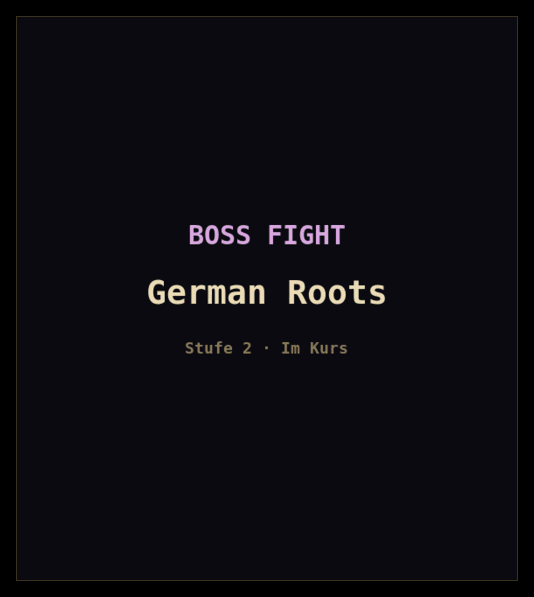

Englisch · sechs Stufen · ein Weg
Das englische Immersionssystem
ein Weg, sechs Stufen
Ob Englisch deine erste oder deine zweite Sprache ist: ein Weg in sechs Stufen, vom Überleben hindurch und auf der anderen Seite der Beherrschung wieder hinaus. Zwei Stufen liegen dem Spiel kostenlos bei. Vier sind die Roots-Pakete. Jede Karte ist Englisch, auf Englisch gelehrt.
Ein Weg, sechs Stufen
Das Grundspiel trägt den Boden und die Decke eines normalen Immersionskurses. Zwei Roots-Pakete liegen darin, zwei darüber hinaus. Lies die Leiter von oben nach unten.
Beginne mit Advance, wenn die Schule dich im Stich gelassen hat oder Englisch neu für dich ist. Ansonsten beginne mit German Roots.
Ist deine Muttersprache eine romanische, nimm Norman Roots vor German Roots.
Das Grundspiel trägt den Boden und die Decke. German Roots und Norman Roots liegen im Kurs. Latin Roots und Greek Roots liegen darüber hinaus. English Advance ist freiwillig, wenn du eine normale Schulbildung hattest. Latin Roots und Greek Roots sind vollständig freiwillig. Es gibt keine Pflicht, die Pakete der Reihe nach zu nehmen; die Leiter ist eine Empfehlung.
Die beiden Schichten, aus denen Englisch besteht
German Roots und Norman Roots sind das Paar im Kurs. Sie sind die beiden Schichten, aus denen das Englische genäht ist — die eine hat es aus der Zeit vor 1066 behalten, die andere kam mit der Eroberung — und sie liegen zwischen English Advance und English Adept.
Sie sind der Grund, warum es im Englischen begin und commence, ask und demand gibt. Am Ende von German Roots siehst du die Naht in einem zusammengesetzten Wort und liest die Bedeutung daran ab. Am Ende von Norman Roots liest du die zweite Schicht des Englischen als Schicht, nicht als Liste schwieriger Wörter.
Das germanische Rückgrat des Alltagsenglischen — die Wörter, die du halb schon kennst. Hier beginnt, wer eine germanische Sprache spricht, und für alle anderen ist es der Normalfall.
Mehr erfahren →Das zweite Englisch — 1066 und das Französisch, das damit kam. Hier beginnt, wer eine romanische Sprache spricht.
Mehr erfahren →Jenseits der Decke, für die Neugierigen
Latin Roots und Greek Roots sind das Paar über dem Kurs. Sie kommen nach English Adept, für Lesende, die die gelehrte Schicht und den Wortschatz der Wissenschaften wollen. Ein Steckenpferd für sprachlich Neugierige, und keinen Deut schlechter dafür.
Teil des Kurses und jenseits dessen, was irgendjemand braucht. Am Ende dieses Paares ist ein unbekanntes Fach- oder literarisches Wort nicht mehr unbekannt: Du zerlegst es auf den ersten Blick, und die Grenzen zwischen den europäischen Sprachen fangen an, wie Dialektgrenzen auszusehen.
Englisch aus seinen Bestandteilen gebaut — die klassische und wissenschaftliche Schicht, zusammengesetzt. Jede Karte lehrt neben dem Stichwort ein verwandtes Partnerwort.
Mehr erfahren →Der Wortschatz von Wissenschaft, Medizin und Abstraktion — die Schicht über dem Lateinischen, mit griechischer Schrift auf der Karte.
Mehr erfahren →Latin Roots und Greek Roots kommen nach Adept, in der Reihenfolge, die dir gefällt.
Was du bekommst
Aus den Paketen selbst gezählt, nicht aus Werbetexten. Fünf Stufen in jedem Paket. Ein Bosskampf am Ende jedes Clusters.
| Stufe | Karten | Wörter | Cluster | Lektionen | Ausgeliefert als |
|---|---|---|---|---|---|
| English Advance | 500 | 500 | 25 | 15 | Grundspiel |
| German Roots | 1.000 | 1.000 | 47 | 48 | DLC |
| Norman Roots | 1.000 | 1.000 | 48 | 49 | DLC |
| English Adept | 1.000 | 1.000 | 56 | 12 | Grundspiel |
| Latin Roots | 500 | 1.000 | 30 | 31 | DLC |
| Greek Roots | 1.000 | 1.000 | 56 | 62 | DLC |
Latin Roots hat 500 Karten, weil jede einzelne der 500 neben dem Stichwort ein verwandtes Partnerwort lehrt: 1.000 Wörter. Wo eine Stufe weniger Lektionen als Cluster zeigt (Advance, Adept), sind ihre Lektionen Kapitelanfänge und keine Tür an jedem Cluster; die vier Roots-Pakete haben an jeder Clustertür eine Lektion, und dort sind sie verpflichtend.
Auf jeder Karte, auf jeder Stufe
Dieselbe Kartenanatomie vom Boden bis zur letzten griechischen Wurzel.
Die Karte
- das Stichwort, auf Englisch
- eine Definition, auf Englisch — nie eine Übersetzung
- ein Beispielsatz
- ein zweites Beispiel — dasselbe Wort noch einmal oder ein verwandtes, der Vetter oder Zwilling, den die Notizen dann erklären
- eine Notes-Zeile: Wortart, die Bestandteile, aus denen das Wort gebaut ist, der Etymon
- Synonyme auf jeder Karte von Adept, German Roots, Norman Roots und Greek Roots; Antonyme, wo es ein echtes gibt
- die Trennung zwischen britischer und amerikanischer Schreibweise, als eigene Ebene — siehe unten
Das Spiel
- Bosskampf am Ende jedes Clusters — acht Stichwörter im Raster, beantwortet auf dem Nummernblock
- Verteilte Wiederholung nach Fibonacci zwischen den Kämpfen
- Lektion an jeder Clustertür in allen vier Roots-Paketen
- drei Wiederholungsübungen pro Paket: das Wurzelregal, Antonyme und Lückentext bei German, Latin und Greek Roots; Diktat statt Regal bei Norman Roots (dessen Karten einzelne altfranzösische Wörter sind, keine Summen) und bei Adept
Jedes Cluster endet in einem Kampf
Acht Stichwörter im Raster, beantwortet auf dem Nummernblock. Eine richtige Antwort rückt dich einen Schritt auf der Bahn vor.
Eine falsche wirft dich zwei Schritte zurück, und ausgerechnet die Karten, die du am schlechtesten kannst, warten auf den Positionen drei und vier — ein Cluster lässt sich also nicht besiegen, bevor seine schwersten Wörter es sind.
Besiege es, und diese Karten verlassen dein tägliches Deck für immer.

Demo testenEnglisch, ganz gleich was die Menüs sagen
Der Kartentext ist Englisch, ganz gleich welche Oberflächensprache eingestellt ist. Die Oberfläche, die Clusternamen und die Advance-Lektionen sind ins Deutsche, Spanische, Japanische, Russische und Chinesische übersetzt. Die Karten nie — keine einzige Karte in einem der sechs Pakete trägt ein fremdsprachiges Feld. Genau das leistet das Wort Immersion hier.
Jedes Paket trägt die Trennung zwischen britischer und amerikanischer Schreibweise als eigene Ebene: ein britischer Zwilling des Stichworts, beider Beispielsätze, der Definition und der Notizen, überall dort, wo sich der britische Text vom amerikanischen unterscheidet, gesteuert von deiner Schreibpräferenz oder deiner englischen Stimme.
Sechs Stufen, eine Reihe
Die sechs Stufen sind eine Reihe: die vier Roots-DLCs — German und Norman im Kurs, Latin und Greek darüber hinaus — zusammen mit dem Grundspiel, das English Advance und English Adept trägt. Als Reihe genommen, kommen der Boden, die beiden Schichten des Englischen, die Decke und die zwei Roots dahinter als ein einziger Kurs statt als sechs getrennte Pakete. Auf Steam erhältlich.
FlashBoss Wurzeln — Die komplette Reihe sind die fünf Artikel in einem: das Grundspiel, das English Advance und English Adept kostenlos in sich trägt, und die vier Roots-Pakete. Du besitzt schon einen Teil davon? Steam berechnet dir nur den Rest.
Fang dort an, wo die Leiter es sagt.
Der Boden und die Decke liegen dem Spiel kostenlos bei. Die vier Roots-Pakete gibt es auf Steam, zusammen oder einzeln.
FlashBoss Wurzeln — Die komplette Reihe →Scientia est Potentia.Wissen ist Macht